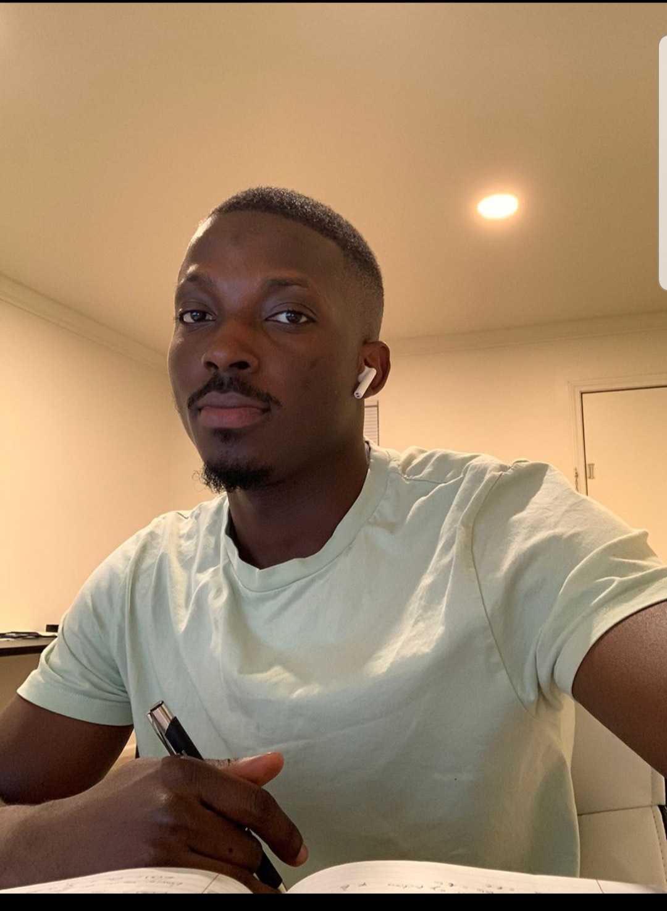

Researcher exploring the intersection of computational materials science, atomistic simulations, machine learning and artificial intelligence for next-generation materials discovery.
I am a PhD researcher working at the intersection of materials modeling, atomistic simulations, machine learning, and generative & agentic AI to accelerate the discovery and design of next-generation materials.
Explore My Research Let's CollaborateMy research focuses on developing computational approaches that combine fundamental physical principles with modern artificial intelligence techniques.
I am currently pursuing a PhD in Computational Materials Science, with research interests spanning atomistic simulations, machine learning and AI-assisted materials discovery.
My work explores how classical simulations, quantum mechanical calculations, machine learning force fields, and generative AI can work together to reduce the computational cost of materials exploration.
I am particularly interested in building intelligent computational workflows that allow AI agents to reason, simulate, evaluate and iteratively discover promising materials candidates.
My research sits at the intersection of computational physics, materials science and artificial intelligence.
Computational modeling of materials at multiple scales to understand structure, dynamics and properties.
Classical molecular dynamics and quantum mechanical simulations for investigating atomic-scale behavior.
Machine learning interatomic potentials and force fields for efficient atomistic simulations.
Exploring generative models for proposing novel materials, structures and candidates with desirable properties.
Designing intelligent research workflows where AI agents can assist with materials discovery and scientific reasoning.
Applying modern machine learning and deep learning methods to materials property prediction and scientific modeling.
A selection of computational research projects exploring the convergence of AI, simulations and materials science.
Development of an AI-assisted workflow for screening and prioritizing candidate materials based on predicted structural and physical properties.
Generative AI Materials Discovery Machine LearningInvestigation of machine learning-based force fields capable of reproducing atomic interactions while reducing the computational cost of traditional simulations.
MLFF MLIP Atomistic SimulationComputational study of materials properties using quantum mechanical simulations to investigate electronic structures and atomic interactions.
QMD Quantum Mechanics Materials PhysicsExploration of autonomous AI research agents capable of coordinating data analysis, computational experiments and candidate evaluation in materials discovery workflows.
Agentic AI LLMs Scientific AITechnologies and computational methods used across research and scientific workflows.
Focused on how to use high-performance computing and molecular dynamics simulations to investigate how polymer membranes transport gases and ions for energy applications. Studied how polymer structure affects gas transport and ion movement, providing atomic-scale insights that could help guide the design of novel materials for fuel cells, carbon dioxide conversion, and gas separation.
Advanced research in Chemical Engineering, focusing on process engineering, process optimization, and the application of analytical and computational methods to complex engineering challenges. Developed expertise in research methodology, process analysis, modelling, and technical problem-solving through independent research ad advanced engineering studies.
Advanced studies in Computer Science with a focus on computational methods, software development, and emerging technologies. Developed strong analytical and problem solving skills through advanced coursework, research, and practical projects, with an emphasis on applying computing solutions to real-world engineering and technical challenges
Developed advanced knowledge and practical expertise in chemical process design, process optimization, thermodynamics. reaction engineering, heat and mass transfer, process control, and process safety. Conducted research, performed laboratory experiments and interpreted engineering data, applied mathematical and computational models and using engineering tools to evaluate and improve chemical processes.
Worked as a Process Engineer at Dangote Petroleum Refinery, supporting refinery operations and manufacturing processes through process monitoring, optimization, and technical services. Worked with Piping & Instrumentation Diagrams (P&IDs) to understand and improve process systems, utilized SCADA for real-time monitoring and operational control, and contributed to troubleshooting and process improvement initiatives aimed at enhancing efficiency, reliability, and overall plant performance.
Worked as an HSSE Engineer at Eterna Plc, supporting health, safety, security, and environmental standards across operational processes. Contributed to Environmental Impact Assessments (EIA) to identify and evaluate potential environmental risks, while applying process safety principles to improve workplace safety, risk management, and operational reliability. Supported the implementation of safety practices and continuous improvement initiatives to maintain a safe and environmentally responsible working environment.
Worked as a Quality Control Analyst at Lafarge Plc, supporting quality assurance and production processes through the analysis and monitoring of raw materials, intermediate products, and finished materials. Conducted laboratory testing and evaluated quality parameters to ensure products met established specifications and industry standards. Collaborated with production teams to identify quality deviations, support process improvements, and maintain consistent product quality.
Graduated with First Class Honours in Chemical Engineering. Developed a strong foundation in process design optimization, chemical process operations, process control, thermodynamics, fluid mechanics, and industrial engineering. Combined rigorous academic training with practical problem-solving and engineering projects, building the technical foundation for a career spanning process engineering, refinery operations, and industrial systems.
Interfacial water exhibits properties that differ markedly from those of the bulk. At charged interfaces, its response reflects a subtle interplay between surface-specific second-order and bulk field-induced third-order contributions. Graphene oxide (GO) nanosheets contain oxygenated defects that create coexisting aromatic and hydrophilic domains, which strongly influence the interfacial water structure, dynamics, and reactivity. Here, we use molecular dynamics simulations with the many-body MB-pol water potential to examine GO/water interfaces with a tunable surface charge. Nuclear quantum effects are incorporated using temperature-elevated path-integral coarse-graining simulations (Te-PIGS) enabling the direct computation of both homodyne-detected (intensity) and heterodyne-detected (phase-resolved) vibrational sum-frequency generation (vSFG) spectra.
Oxides Two Dimensional MaterialsAccurately predicting the critical micelle concentration (CMC) of surfactants is crucial for optimizing their use across various industries, including pharmaceuticals, detergents, and emulsions. This study presents a comprehensive two-part investigation of surfactant LogCMC prediction. In Part I, we perform exploratory data analysis using clustering and SHapley additive exPlanations (SHAP)-based feature importance determination to understand structural diversity and identify key molecular drivers in both nonionic-only and mixed surfactant datasets. This reveals that carbonyl groups and polar surface areas govern nonionic surfactants, while ionic surfactants are dominated by charged atoms, an insight that guide model development.
Research Paper Generative AILarge language models (LLMs) are rapidly changing how researchers in materials science and chemistry discover, organize, and act on scientific knowledge. This paper analyzes a broad set of community-developed LLM applications in an effort to identify emerging patterns in how these systems can be used across the scientific research lifecycle. We organize the projects into two complementary categories: Knowledge Infrastructure, systems that structure, retrieve, synthesize, and validate scientific information; and Action Systems, systems that execute, coordinate, or automate scientific work across computational and experimental environments. The submissions reveal a shift from single-purpose LLM tools toward integrated, multi-agent workflows that combine retrieval, reasoning, tool use, and domain-specific validation.
Materials Science Artificial IntelligenceAccurately predicting the critical micelle concentration (CMC) of surfactants is crucial for optimizing their use across various industries, including pharmaceuticals, detergents, and emulsions. In this study, we evaluate the effectiveness of graph-based machine learning models—specifically graph convolutional networks (GCNs), graph attention networks (GATs), and a graph-transformer model called PharmHGT—for predicting LogCMC values. Additionally, we complement these ML approaches with molecular dynamics (MD) simulations to calculate solvation free energies and provide fundamental thermodynamic insights into surfactant behavior. Our findings offer insights into the relative strengths of these approaches, emphasizing the potential advantages of transformer-based architectures like PharmHGT in representing molecular graphs more effectively than traditional graph neural networks.
Machine Learning Molecular DynamicsUnderstanding proton transfer at the aqueous graphene oxide (GO) interface is essential for developing and designing GO-based proton exchange membranes for fuel cells. By comparing GO sheets with two different oxidation levels using deep potential molecular dynamics (DPMD) simulations, we find that oxidized GO promotes interfacial proton release while reduced GO adsorbs protons.
Proton Generation Proton AdsorptionThe structure and dynamics of water at charged graphene interfaces fundamentally influence molecular responses to electric fields with implications for applications in energy storage, catalysis, and surface chemistry. Leveraging the realism of the MB-pol data-driven many-body potential and advanced path-integral quantum dynamics, we analyze the vibrational sum frequency generation (vSFG) spectrum of graphene/water interfaces under varying surface charges. Our quantum simulations reveal a distinctive dangling OH peak in the vSFG spectrum at neutral graphene, consistent with recent experimental findings yet markedly different from those of earlier studies. As the graphene surface becomes positively charged, interfacial water molecules reorient, decreasing the intensity of the dangling OH peak as the OH groups turn away from the graphene.
Graphene Hydrogen BondingMy goal is to bridge physics-based understanding with artificial intelligence, creating computational systems capable of exploring enormous materials spaces faster and more intelligently than traditional approaches alone.
Interested in research collaboration, computational materials science, AI for scientific discovery, or academic opportunities?
baloguntoheebola@gmail.com
Department of Materials Science, Lousiana State University, United States